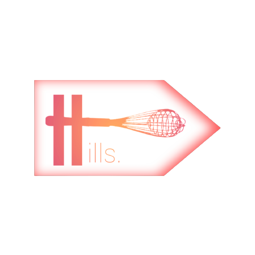

Ketering Hills
The Restaurant
The black Goose bistro offers casual lunch and diner fare in a relaxed atmosphare.
The menu changes regularly to hiligh the new local ingridients.
Catering
You have fun, we handle the cooking. The Black Goose Catering can handle events
from snacks for a meetup to elegant coorporate fundraisers.
Location and Hours
Seekonk, Massasusets: Monday through Thursday 11am to 9pm
{% extends 'base.html' %}